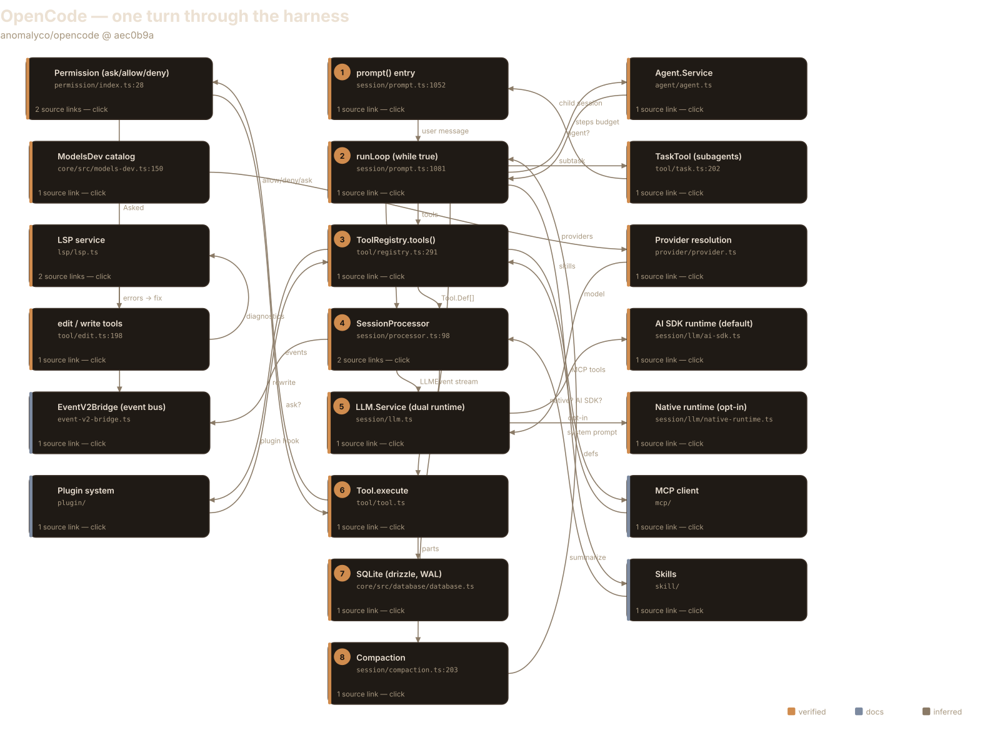
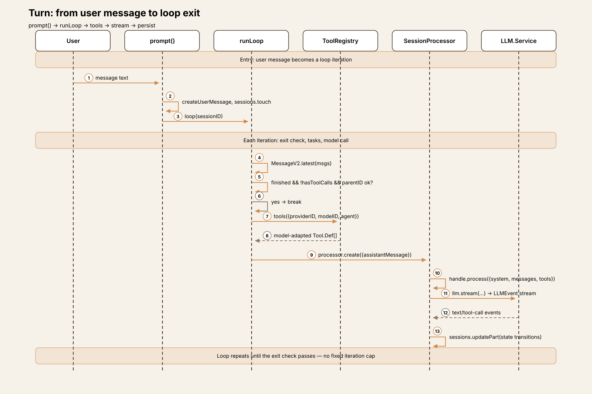
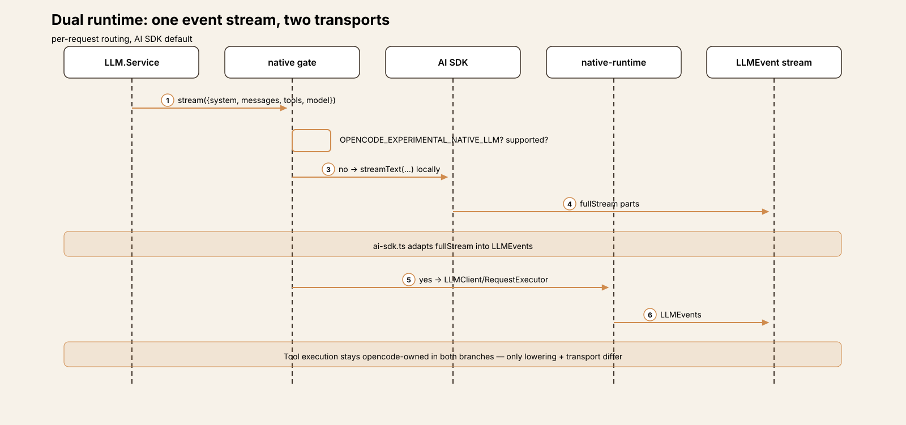
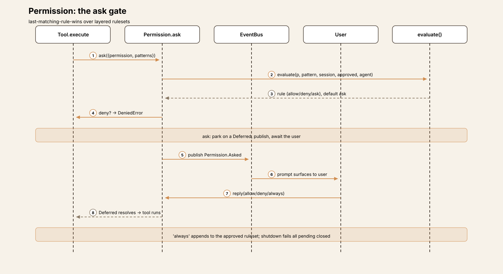
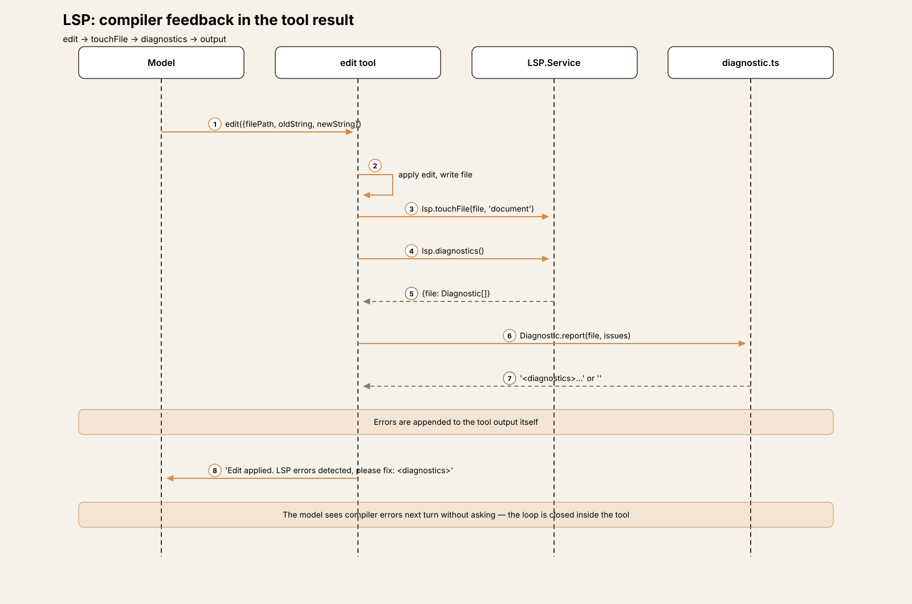
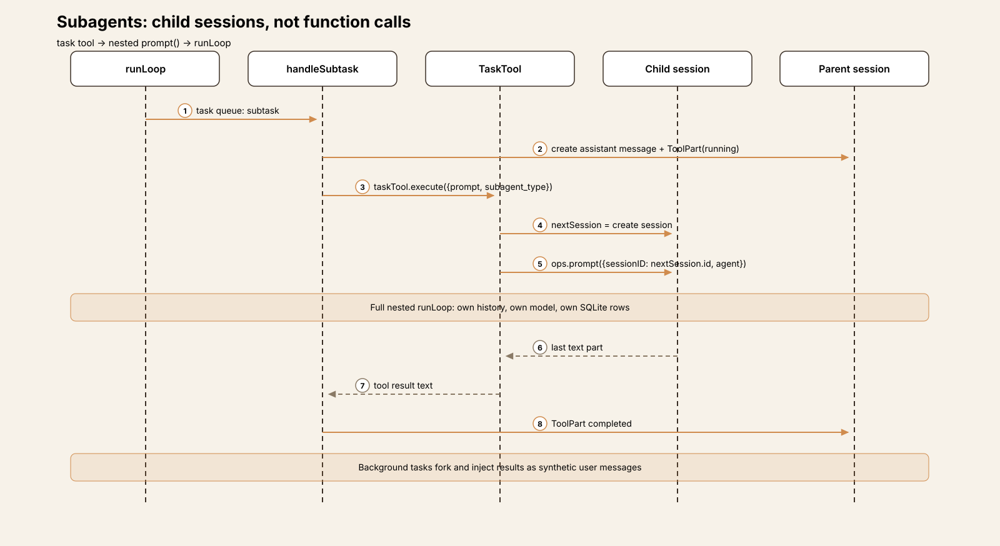

Agent Harness Anatomy #7: OpenCode — the dual-runtime coding agent
Series: Agent Harness Anatomy — top-down dissections of real agent harnesses, grounded in verifiable source code. Every behavioral claim below carries a footnote to a pinned GitHub permalink; the full evidence lives in the endnotes.
Version block
- Repo: anomalyco/opencode
- Pinned: tag
v1.18.34→aec0b9a6d8898f68f923aaf08b7306d931fd9d76(2026-09-30) - Language: TypeScript, Bun runtime; Effect-based dependency injection throughout
- License: MIT
- Claim under test: "The open source coding agent."
OpenCode is the fastest-growing harness this series has covered — over 210,000 stars at the time of analysis — and the first one built on Effect, the typed functional-effects library for TypeScript. That choice shapes everything: services are Effect tags, errors are typed values, and the agent loop is an Effect program. The interesting question is not whether Effect works here (it does), but what it buys a coding agent: cancellation, resource safety, and a permission system built on deferred effects rather than callbacks.12

Explore the interactive architecture diagram 21 nodes, 29 edges — pan, zoom, and follow every subsystem linkThe mental model
OpenCode is a dual-runtime coding agent: one session loop, one
tool system, one SQLite store — and two LLM transports underneath.
The default path runs the Vercel AI SDK locally (streamText); an
opt-in native runtime lowers the same request to OpenCode's own
@opencode-ai/llm client. Both converge on a single
LLMEvent stream that the session processor consumes, so the loop
never knows which transport ran.12 The loop itself is almost
provocatively simple: runLoop spins while (true) and exits
only when the model stops and there are no pending tool calls
and the last assistant message is a direct child of the user
message — a "stop" with tool calls present does not exit, so tool results
always flow back into the loop.56
The governing tradeoff: OpenCode buys model-adaptivity and transport
optionality at the cost of indirection. The tool set is rebuilt per
request for the exact model in play — GPT-family models get
apply_patch instead of edit+write — and the
provider catalog is fetched live from a network API rather than vendored,
so the harness never ships a stale model list but cannot start offline
with full provider knowledge.915
Package map
A Bun monorepo. Three packages matter:3
| Package | Role | Contents |
|---|---|---|
packages/opencode |
The harness core | session loop, tool registry, permission system, LSP, providers, subagents, compaction, MCP, skills |
packages/app |
The terminal UI | SolidJS TUI rendering session state from the SQLite store |
packages/core |
Shared substrate | database (Drizzle/Effect, WAL), auth, config, logging |
Cross-cutting: every service is an Effect Tag
(SessionProcessor.tag, LLM.tag,
Database.tag…), composed through layers — so the entire harness
is a dependency graph the type checker can see.4
The core loop
runLoop (packages/opencode/src/session/prompt.ts:1081) is
the whole game in ~80 lines. It reads the session's messages fresh each
iteration — filtering compacted messages, taking
MessageV2.latest() — and the exit check is a three-part
conjunction: the last assistant message finished with a non-tool-calls
reason, there are no pending tool calls, and its parentID is the
user message.56 There is no iteration counter anywhere in the
loop. The only numeric bound is maxSteps, which defaults to
Infinity; when a configured step limit is reached, OpenCode does
not kill the loop — it injects MAX_STEPS_PROMPT, telling the
model to wrap up gracefully.7
Before each model call, the loop drains a task queue: subtasks become
child sessions, compactions get processed, and context overflow triggers
compaction.create({ auto: true }).21 Entry is through
prompt(), which creates the user message, touches the session,
and runs everything inside state.ensureRunning so concurrent
prompts serialize on the session rather than interleaving.8

The dual LLM runtime
This is OpenCode's most distinctive architectural decision. The boundary
is documented in packages/opencode/src/session/llm/AGENTS.md: two
runtimes, one event stream.12
- Default — Vercel AI SDK.
ai-sdk.tsrunsstreamText()locally and adaptsfullStreamparts intoLLMEvents. The SDK executes tools if configured, but OpenCode adapts the stream into its own event model and keeps tool execution in its own hands.13 - Opt-in — native runtime. Behind
OPENCODE_EXPERIMENTAL_NATIVE_LLM, the request is lowered to an@opencode-ai/llmLLMRequestand executed viaLLMClient/RequestExecutor— OpenCode's own transport, no Vercel SDK in the path.14
Routing is per-request inside LLM.Service, and the processor
below only ever sees LLMEvents. The provider catalog feeding
model selection is not vendored at all: it is fetched from
https://models.opencode.ai/api.json, cached locally with
locking, and refreshed periodically — the harness adapts to new models
without a release.15

Model-adaptive tools
ToolRegistry.tools() rebuilds the tool set for the exact
provider/model/agent on every request. The sharpest edge: when
usePatch is true (GPT-family models), the registry returns
apply_patch instead of edit and
write — the model's editing affordance is swapped wholesale,
not just re-described.9 The
tool.definition plugin hook can rewrite any tool's description
or parameters before the model sees it, and MCP plus plugin tools join
the built-in registry dynamically.10
(websearch is gated to the opencode provider only — a quiet
reminder that the tool set is also a product surface.)11
The permission model
Every tool call passes through Permission.ask. Rules layer —
session, approved, agent config — and evaluation is
last-matching-rule-wins, with a default of
ask.16 The ask path is
pure Effect: publish Permission.Asked on the session bus, park on
a Deferred, and resume when the user replies. Shutdown rejects
all pending requests closed rather than leaving them hanging.17
Answering "always" appends the pattern to the approved ruleset, so the
permission model learns within a session.

LSP feedback, for free
After edit or write applies, the tool touches the file
in the LSP service, pulls diagnostics, and appends any errors to its own
output: "Edit applied. LSP errors detected in this file, please fix
them."1819
Only errors are reported (warnings stay silent), capped at 20 per file —
the compiler feedback loop is closed inside the tool result, so
the model self-corrects on the next turn without any harness-level retry
logic.

One turn, end to end
Trace: the user sends Add a retry loop to the fetch call in src/api.ts
to a session.
① Input. SessionPrompt.prompt()
(session/prompt.ts:1052) runs revert.cleanup, creates
the user message, touches the session, and enters loop() — which
runs the turn inside state.ensureRunning so concurrent prompts
serialize on the session.8
② Loop. runLoop (session/prompt.ts:1081)
spins while (true). Each iteration: filter compacted messages,
take MessageV2.latest(), and run the three-part exit check —
finished with a non-tool-calls reason, no pending tool calls, and
parentID equal to the user message. A "stop" with tool calls
present does not exit. The task queue drains first (subtasks,
compactions, overflow), then the agent resolves and maxSteps
(default Infinity) is computed; the final configured step
injects MAX_STEPS_PROMPT asking the model to wrap up rather
than hard-killing execution.567
③ Tools. ToolRegistry.tools()
(tool/registry.ts:291) builds the tool set for this exact model:
GPT-family models get apply_patch instead of
edit+write; the tool.definition plugin
hook can rewrite any definition; MCP and plugin tools join
dynamically.910
④ Stream. SessionProcessor.create()
snapshots the working tree before the model call — because the AI
SDK may execute tools before emitting events — and builds the
ProcessorContext (toolcall map, abort flag, compaction
flag).25 handle.process()
(session/processor.ts:641) then calls LLM.Service
with the assembled system prompt (environment, instructions, MCP servers,
skills), the message history, and the resolved tools.2627
⑤ Model. LLM.Service routes per request:
default is the Vercel AI SDK (streamText, fullStream
adapted to LLMEvents); with
OPENCODE_EXPERIMENTAL_NATIVE_LLM it lowers to the native
@opencode-ai/llm transport. Both converge on one
LLMEvent stream, so the processor never knows which transport
ran. Model and provider resolve against the live ModelsDev
catalog.12131415
⑥ Execute. Each tool call hits the permission gate:
evaluate() applies last-matching-rule-wins over the layered
rulesets, defaulting to ask; a deny fails fast, an ask parks on
a Deferred until the user replies.1617
After edit/write, LSP diagnostics are appended to
the tool's own output so the model sees compiler errors next
turn.18
⑦ Persist. Every message and part lands in SQLite
(Drizzle/Effect, WAL mode) via sessions.updateMessage /
updatePart.20 The loop holds no
conversation state in memory across turns — each iteration re-reads the
working set, which is what makes interrupt, compaction, and multi-surface
(TUI / serve / ACP) concurrency safe.
⑧ Compact. Each iteration checks
compaction.isOverflow against the model's context budget; on
overflow, compaction.create({ auto: true }) summarizes the head
and keeps a token-estimated recent tail. After the loop breaks,
compaction.prune() runs forked in the background.21
Termination itself is model-driven — there is no fixed iteration cap
unless the agent config sets one.
The tradeoff visible across all eight steps: OpenCode keeps the loop dumb and pushes intelligence into the seams — model-adapted tools, deferred permission effects, in-tool LSP feedback — but every seam is another per-request computation, and the harness trusts the model to know when it is done.

Play the 8-step trace Message to loop to model-adapted tools, dual-runtime stream, permission gate, LSP feedback, and compactionSubsystem inventory
| Subsystem | What it does | Key file |
|---|---|---|
| Session loop | prompt() entry, runLoop while(true), task queue, model-driven exit |
session/prompt.ts |
| Stream processor | Pre-capture, ProcessorContext, LLMEvent → part state transitions |
session/processor.ts |
| Dual LLM runtime | AI SDK default + opt-in native @opencode-ai/llm; one LLMEvent stream |
session/llm/ |
| Tool registry | Per-request, model-adapted tool sets; tool.definition plugin hook |
tool/registry.ts |
| Permissions | Last-matching-rule-wins; ask via Deferred; shutdown fails closed |
permission/index.ts |
| LSP | Diagnostics appended to edit/write output; errors only, cap 20/file | lsp/, tool/edit.ts |
| Subagents | Child sessions with nested runLoop; background tasks inject synthetic user messages |
tool/task.ts |
| Compaction | Per-iteration overflow check; summarize head, keep token-budgeted tail | session/compaction.ts |
| Providers | Live ModelsDev catalog, cached with locking + periodic refresh | provider/ |
| Storage | SQLite via Drizzle/Effect; WAL mode; migrations | packages/core/src/database/ |
| Event bus | Session-scoped pub/sub: Permission.Asked, message/part updates |
session/bus.ts |
| Skills & instructions | Assembled into the system prompt per turn | skill/, session/instructions.ts |
| MCP | Servers contribute tools dynamically to the registry | mcp/ |
Extension points in depth
Plugins
The tool.definition hook lets plugins rewrite tool
descriptions and parameters before the model sees them — the tool set is
a negotiated surface, not a fixed list.10
Combined with dynamic MCP and plugin tool registration, OpenCode's
extension story is: bring your own tools, reshape the builtins, and the
loop will not notice the difference.
Agents
Subagents are full child sessions — separate message history, own nested
runLoop, own SQLite rows — spawned through the task
tool.22 Background tasks fork and
inject their completion back into the parent as synthetic user messages,
so async work re-enters the loop through the same door as human
input.23
Events
The session bus (session/bus.ts) is the coordination spine:
permission prompts, message and part updates all publish here, and every
surface — TUI, serve, ACP — subscribes to the same
events.24
Deliberate omissions
This teardown covers the TUI-driven loop, the tool system, permissions,
LSP, providers, subagents, and compaction. It does not cover the
opencode serve control plane, the ACP surfaces, or the
app package's SolidJS rendering — each deserves its own
pass. The provider catalog's network dependency (offline behavior,
cache-invalidation edge cases) is noted but not stress-tested.
Comparison matrix row
| # | Dimension | OpenCode (v1.18.34) |
|---|---|---|
| 1 | Agent loop | runLoop while(true); model-driven exit (finish reason + no tool calls + parentID); maxSteps defaults Infinity, wrap-up prompt instead of kill |
| 2 | Tool system | Per-request model-adapted registry; GPT gets apply_patch instead of edit/write; tool.definition plugin hook; MCP + plugin tools dynamic |
| 3 | Model providers | Live ModelsDev catalog (fetched, cached, refreshed); dual runtime — Vercel AI SDK default, opt-in native @opencode-ai/llm; one LLMEvent stream |
| 4 | Prompt construction | System prompt assembled per turn: environment + instructions + MCP + skills; working tree pre-captured before the model call |
| 5 | Memory/session | SQLite (Drizzle/Effect, WAL); no in-memory conversation state across turns; per-iteration overflow check → summarize head, keep token-budgeted tail |
| 6 | Reasoning/planning | Subagents as child sessions with nested loops; background tasks inject synthetic user messages; no separate planner |
| 7 | Extensibility | Plugin tool-definition hook, MCP, skills, subagents, permission rulesets; Effect Tag DI throughout |
| 8 | Interfaces | TUI (SolidJS) / serve / ACP — all subscribe to the session bus; SQLite as the shared substrate |
| 9 | Failure handling | LSP diagnostics in tool output (self-correct next turn); permission deny fails fast; shutdown fails pending asks closed |
| 10 | Security model | Permission gate per tool call: last-matching-rule-wins, default ask, deferred user reply; no OS sandbox in the loop |
Endnotes
All notes are VERIFIED against v1.18.34
(aec0b9a6d8898f68f923aaf08b7306d931fd9d76) unless marked otherwise.
GH = https://github.com/anomalyco/opencode/blob/aec0b9a6d8898f68f923aaf08b7306d931fd9d76/.
-
Pin verified via GitHub API 2026-10-06: tag
v1.18.34resolves toaec0b9a6d8898f68f923aaf08b7306d931fd9d76, committed 2026-09-30T22:39:32Z. ↩ -
Repo description "The open source coding agent.", 212,009 stars, MIT license — GitHub API 2026-10-06. ↩
-
Monorepo layout:
packages/opencode(harness core),packages/app(TUI),packages/core(shared: database, auth, config) — top-levelpackages/directory at the pinned SHA. ↩ -
Effect
Tagservices:SessionProcessor.tag(GH…/session/processor.ts),LLM.tag(GH…/session/llm/index.ts),Database.tag(GH…/core/src/database/database.ts). ↩ -
runLoopat GH…/session/prompt.ts#L1081;while (true)at L1095. ↩ -
Exit check: last assistant message
finishreason is not"tool-calls", no pending tool calls, andparentIDequals the user message ID — GH…/session/prompt.ts#L1100. ↩ -
maxSteps = agent.steps ?? Infinity; on reaching it,MAX_STEPS_PROMPTis injected asking the model to wrap up — GH…/session/prompt.ts#L1140. ↩ -
prompt()at GH…/session/prompt.ts#L1052:revert.cleanup,createUserMessage,sessions.touch, thenloop()insidestate.ensureRunning. ↩ -
ToolRegistry.tools()at GH…/tool/registry.ts#L291;usePatchswapsapply_patchforedit+writeon GPT-family models. ↩ -
tool.definitionplugin hook applied inToolRegistry.tools()— GH…/tool/registry.ts#L310; MCP and plugin tools registered dynamically. ↩ -
websearchgated to the opencode provider — GH…/tool/registry.ts#L295. ↩ -
Dual-runtime boundary documented in GH…/session/llm/AGENTS.md: AI SDK default, native opt-in, one
LLMEventstream. ↩ -
AI SDK path:
streamText()withfullStreamadapted toLLMEvents — GH…/session/llm/ai-sdk.ts. ↩ -
Native gate:
OPENCODE_EXPERIMENTAL_NATIVE_LLMplus native-runtime availability; lowers to@opencode-ai/llmLLMRequestviaLLMClient/RequestExecutor— GH…/session/llm/native-runtime.ts. ↩ -
Provider catalog fetched from
https://models.opencode.ai/api.json, cached locally with locking and periodic refresh — GH…/provider/models.ts. ↩ -
Permission rules: last-matching-rule-wins, default
ask— GH…/permission/index.ts#L28. ↩ -
askpublishesPermission.Askedand parks on aDeferred; shutdown rejects pending requests — GH…/permission/index.ts#L67. ↩ -
LSP diagnostics appended in
edit— GH…/tool/edit.ts#L198. ↩ -
Same in
write(GH…/tool/write.ts#L76); errors only, capped at 20 per file — GH…/lsp/diagnostic.ts#L14. ↩ -
SQLite via Drizzle/Effect, WAL mode,
synchronous = NORMAL— GH…/core/src/database/database.ts#L27. ↩ -
Per-iteration overflow check →
compaction.create({ auto: true });compaction.prune()forked in background after the loop — GH…/session/compaction.ts#L203. ↩ -
Subagent = child session with nested
runLoop— GH…/tool/task.ts and GH…/session/prompt.ts#L255. ↩ -
Background task completion injected as synthetic user messages — GH…/session/prompt.ts#L1120. ↩
-
Session bus events:
Permission.Asked, message/part updates — GH…/session/bus.ts. ↩ -
SessionProcessor.create()pre-captures the working tree — GH…/session/processor.ts#L98. ↩ -
handle.process()callsLLM.Service— GH…/session/processor.ts#L641. ↩ -
System prompt: environment, instructions, MCP servers, skills — GH…/session/system.ts. ↩